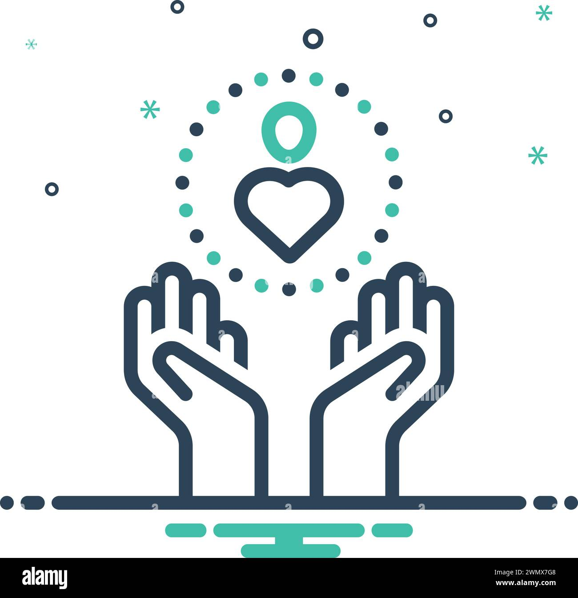

cbazaar
Design and develop a robust and user-friendly eCommerce web application that provides customers with a seamless shopping experience, supports secure transactions, and offers an efficient management system for administrators.
read moreDesign and develop a robust and user-friendly eCommerce web application that provides customers with a seamless shopping experience, supports secure transactions, and offers an efficient management system for administrators.
read moreLead the redesign and development of the organization's website to enhance its online presence, improve user experience, and effectively communicate the mission, services, and achievements of the organization.
read moreShopify E-commerce Transformation: Revamped the online retail presence by migrating from a legacy system to Shopify. Designed, developed, and launched a dynamic e-commerce store, leveraging Shopify’s features to enhance the customer shopping experience.
read moreLed the development of e-commerce platforms with WordPress and WooCommerce, ensuring seamless transactions. Customized plugins and integrated third-party solutions to enhance functionality and meet project goals.
read more
Caring Care is a healthcare management platform built with Next.js and Tailwind CSS, offering a responsive, high-performance web application with fast load times and a user-friendly interface.
read more
Customer Support Portal Optimization: Enhanced customer support operations by utilizing Freshdesk to create a centralized platform for managing inquiries and improving overall support efficiency.
read more